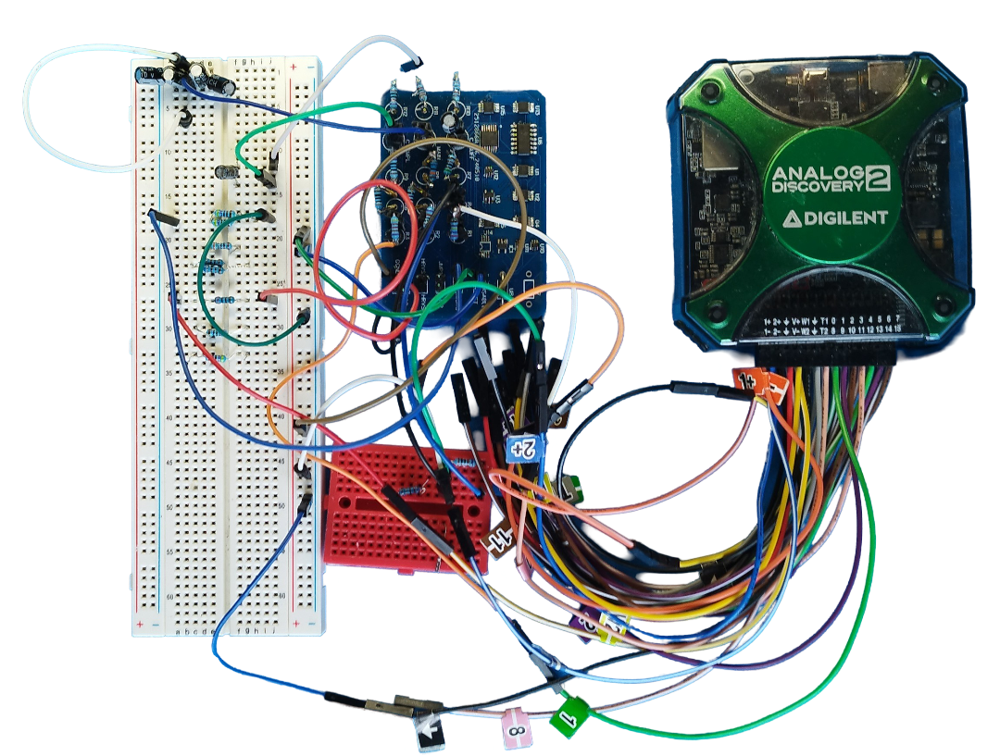

We aim to explore the cross-cutting research problems and gaps concerning the
hardware and
software for
embedded and networked systems with extreme resource and energy constraints.
These systems will significantly impact how we live and work in the near future since there will be billions of interconnected devices.
This situation will create a significant demand for more bandwidth, low-power operation, sustainability, confidentiality, security, dependability, and many more.
Our current vision is to build and deploy networked embedded devices that can
harvest
ambient energy,run forever without batteries and support a wide range of green
applications from remote sensing to wearables. We explore:
-
low-power computation techniques and software building blocks
-
low-power wireless communication protocols
-
hardware for low-power computing and communication.
We provide the state-of-the-art microcontroller-based computing platforms, field-programmable gate arrays (FPGAs), sensors, wireless modules, energy harvesting kits, and measurement tools to create testbeds for experimental evaluations and demonstrate real-world applications.
Current Research
-
Hardware and software for intermittent computing on batteryless IoT
-
Software runtimes, tiny operating systems, programming models, hardware platforms,
PCBs
-
Low-power and batteryless sensor networks
-
Batteryless wireless protocols, backscatter, BLE, hardware support
-
On-device low-power and adaptive intelligence at the (batteryless) edge
-
Model compression, pruning, quantization, new neural architectures, distributed intelligence
-
Emerging hardware for low-power on-device intelligence
-
In-memory computing, emerging non-volatile memory technologies, in-/near-sensor computing

Past Members
-
Zehra Gulru Cam Taskiran, In-Memory Computing and Fast Inference Visiting Scholar/Postdoc 2025
-
Muath Abu Lebdeh, Efficient Processing of Spiking Neural Networks: A Memory-Based Approach PhD Thesis
(co-advised with Davide Brunelli) 2025
-
Roberto Lorenzon Memory-Efficient Streaming Inference Architecture on Low-power Microcontrollers MSc Thesis 2025
-
Khakim Akhunov, Enabling Full-Fledged Parallelism on Intermittently Powered Computing PhD Thesis 2024
-
Welid Ben Yahmed Tiny Machine Learning for Drift Compensation of Mems Pressure Sensors MSc Thesis (co-advised with Danilo Pau) 2024
-
Muhammad Waseem Gaussioan Mixture Model Classsification on Embedded Devices MSc Thesis 2024
-
Alessandro Torissi, Ultra Low Power Electronics and Communication Methods for Energy-Harvesting Batteryless IoT Devices PhD Thesis
(co-advised with Davide Brunelli) 2023
-
Michele Pio Fragasso Development of an Intermittent Computing Architecture for Machine Learning on Configurable Platform MSc Thesis
(co-advised with Davide Brunelli) 2023
-
Eren Yıldız, Systems Support for Intermittent Computing PhD Thesis 2023
-
Luca Caronti Adaptive Hardware Accelerated Intermittent Deep Neural Network Inference MSc Thesis (co-advised with Davide Brunelli) 2022